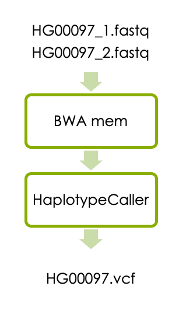
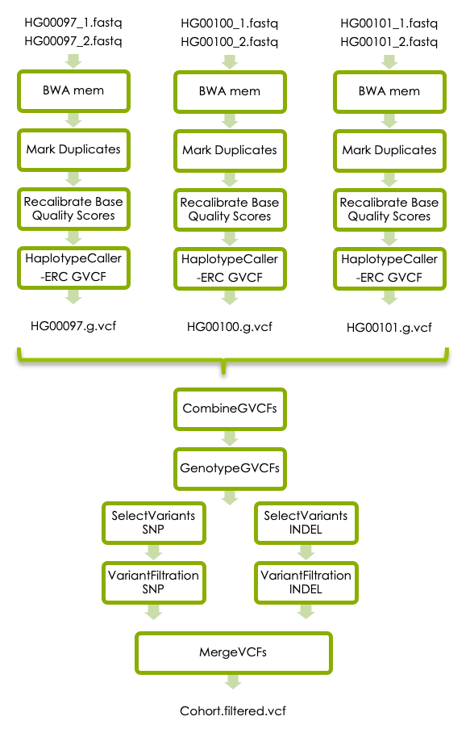

Variant Calling Workflow
From reads to short variants
Introduction
Whole genome sequencing (WGS) is a comprehensive method for analyzing entire genomes. This workshop will take you through the process of calling germline short variants (SNVs and INDELs) in WGS data from three human samples.
- The first part of the workshop will guide you through a basic variant calling workflow in one sample. The goals are that you should get familiar with the bam and vcf file formats, and be able to interpret vcf files in Integrative Genomics Viewer (IGV).
- If you have time, the next part of the workshop will show you how to perform joint variant calling in three samples. The goals here are that you should be able to interpret multi-sample vcf files and explain the differences between the g.vcf and vcf file formats.
- If you have time, the last part of the workshop will take you through the GATK best practices for germline short variant detection in three samples. The goal here is that you should learn how to use GATK’s documentation so that you can analyze your own samples in the future.
General guide
- You will work on the computing cluster Rackham at UPPMAX
- If you change the node you are working on you will need to reload the tool modules.
- Please type commands in the terminal instead of copying and pasting them which often result in formatting errors.
- Use tab completion.
- In paths, please replace
usernamewith your actual UPPMAX username. - In commands, please replace
parameterwith the correct parameter, for example your input file name, output file name, directory name, etc. - A line starting with
#is a comment - Running a command without parameters will often return a help message on how to run the command.
- After a command is completed, please check that the desired output file was generated and that it has a reasonable size (use
ls -l). - Google errors, someone in the world has run into EXACTLY the same problem you had and asked about it on a forum somewhere.
Data description
Samples
The 1000 Genomes Project ran between 2008 and 2015, creating the largest public catalogue of human variation and genotype data. In this workshop we will use low coverage whole genome sequence data from three individuals, generated in the first phase of the 1000 Genomes Project.
| Sample | Population | Sequencing technology |
|---|---|---|
| HG00097 | British in England and Scotland | Low coverage WGS |
| HG00100 | British in England and Scotland | Low coverage WGS |
| HG00101 | British in England and Scotland | Low coverage WGS |
Genomic region
The LCT gene on chromosome 2 encodes the enzyme lactase, which is responsible for the metabolism of lactose in mammals. Most mammals can not digest lactose as adults, but some humans can. Genetic variants upstream of the LCT gene causes lactase persistence, which means that lactase is expressed also in adulthood and the carrier can continue to digest lactose. The variant rs4988235, located at position chr2:136608646 in the GRCh37 reference genome, has been shown to lead to lactose persistence. The alternative allele (A on the forward strand and T on the reverse strand) creates a new transcription factor binding site that enables continued expression of the gene after weaning.
In this workshop we will detect genetic variants in the region chr2:136545000-136617000 in the three samples listed above, and check if they carry the allele for lactase persistence.
For those interested in the details of the genetic bases for lactose tolerance, please read the first three pages of Lactose intolerance: diagnosis, genetic, and clinical factors by Mattar et al. The variant rs4988235 is here referred to as LCT-13910C>T.
Data folder on UPPMAX
All input data for this exercise is located in this folder on Rackham:
/sw/courses/ngsintro/reseq/dataThe fastq files are located in this folder:
/sw/courses/ngsintro/reseq/data/fastqReference files, such as the reference genome in fasta format, are located in this folder:
/sw/courses/ngsintro/reseq/data/refPreparations
Laptop
This lab will be done completely on UPPMAX and the instructions assume that you connect via ThinLinc. However, if you prefer to connect to UPPMAX via ssh you can instead copy some of the resulting files to your laptop and work on them there. , install IGV, and run all the IGV steps on your laptop. If so, please create a local workspace on your laptop, for example a folder called ngsworkflow on your desktop. You need to have write permission in this folder. If you connect to UPPMAX via ThinLinc you don’t have to crete a local workspace.
UPPMAX
Connect to UPPMAX
During this lab it is best to connect to UPPMAX with ThinLinc, which gives you a graphical remote desktop. Instructions for this is available in Canvas under Contents > Additional content > Connecting to UPPMAX. Please follow the instructions in section 1.2 Remote desktop connection.
Logon to a node
This lab should be done on a compute node (not the login node). First check if you already have an active job allocation using this command:
squeue -u usernameWhere username should be replaced with your username.
If no jobs are listed you should allocate a job for this lab. If you already have an active job allocation please proceed to Connect to the node below.
Use this code to allocate a job on day 1 of variant-calling:
salloc -A snicxxxx-xx-xx -t 04:00:00 -p core -n 1 --no-shell --reservation=snicxxxx-xx-xxx_xxUse this code to allocate a job on day 2 of variant-calling:
salloc -A snicxxxx-xx-xx -t 04:00:00 -p core -n 1 --no-shell --reservation=snicxxxx-xx-xxx_xxOnce your job allocation has been granted (should not take long) please check the allocation again using:
squeue -u usernameYou should now see that you have an active job allocation. The node name for your job is listed under the nodelist header.
Connect to the node:
ssh -Y nodenameWorkspace on UPPMAX
You should work in your folder under the course’s nobackup folder, just like you have done during the previous labs. Start by going there using this command:
cd /proj/snicxxxx-xx-xx/nobackup/usernameWhere username should be replaced with your real username.
Create a folder for this exercise and move into it:
mkdir ngsworkflow
cd ngsworkflowMake sure you are located in
/proj/snicxxxx-xx-xx/nobackup/username/ngsworkflowfor the rest of this lab.
Symbolic links to data
The raw data files are located in the Data folder described above.
Create a symbolic link to the reference genome (in this case chromosome 2 in GRCh37) in your workspace:
ln -s /sw/courses/ngsintro/reseq/data/ref/human_g1k_v37_chr2.fastaDo the same with the fastq files:
ln -s /sw/courses/ngsintro/reseq/data/fastq/HG00097_1.fq
ln -s /sw/courses/ngsintro/reseq/data/fastq/HG00097_2.fq
ln -s /sw/courses/ngsintro/reseq/data/fastq/HG00100_1.fq
ln -s /sw/courses/ngsintro/reseq/data/fastq/HG00100_2.fq
ln -s /sw/courses/ngsintro/reseq/data/fastq/HG00101_1.fq
ln -s /sw/courses/ngsintro/reseq/data/fastq/HG00101_2.fqAccessing programs
Load the modules that are needed during this workshop. Remember that these modules must be loaded every time you login to Rackham, or when you connect to a new compute node.
First load the bioinfo-tools module:
module load bioinfo-toolsThis makes it possible to load the individual programs:
module load FastQC/0.11.8
module load bwa/0.7.17
module load samtools/1.10
module load GATK/4.1.4.1Although you don’t have to specify which versions of the tools to use, it is recommended to do so for reproducibility if you want to rerun the exact same analyses later. When loading the module GATK/4.1.4.1 you will get a warning message about the fact that GATK commands have been updated since the previous version of GATK. This is fine and you don’t have to do anything about it.
Index the genome
Tools that compare short reads with a large reference genome needs indexes of the reference genome to work efficiently. You therefore need to create index files for each tool.
First check if you are standing in the correct directory:
pwdShould return
/proj/snicxxxx-xx-xx/nobackup/username/ngsworkflowGenerate BWA index files:
bwa index -a bwtsw human_g1k_v37_chr2.fastaCheck that several new files have been created using ls -l. Then Generate a samtools index:
samtools faidx human_g1k_v37_chr2.fastaCheck to see what file(s) were created using ls -lrt. Then Generate a GATK sequence dictionary:
gatk --java-options -Xmx7g CreateSequenceDictionary -R human_g1k_v37_chr2.fasta -O human_g1k_v37_chr2.dictAgain, check what file(s) were created using ls -lrt.
1 Variant calling in one sample
Now let’s start the main part of the workshop, which is variant calling in one sample. The workflow consists of aligning the reads with BWA and detecting variants with HaplotypeCaller as illustrated below.

1.1 Aligning reads
1.1.1 BWA mem
You should use BWA mem to align the reads to the reference genome.
BWA mem you need to add something called a read group, which contains information about how the reads were generated.
This is required by HaplotypeCaller. Since we don’t know exactly how the reads in the 1000 Genomes Project were generated we will
assume that each pair of fastq files was generated from one library preparation (libraryx), derived from one biological sample (HG00097), and run on one lane (lanex) of a flowcell (flowcellx) on the Illumina machine, and define a toy read group with this information.
The code for adding this read group is-R “@RG\tID:HG00097\tPU:lanex_flowcellx\tSM:HG00097\tLB:libraryx\tPL:illumina”.
When running BWA for another sample later on you have to replace HG00097 in the read group with the new sample name. To learn more about read groups please read this article at GATK forum.
You also need to specify how many threads the program should use (should be the same as the number of cores you have access to and is defined by the code -t 1 below) and what reference genome file to use. The output from BWA should be parsed to samtools sort, which sorts the sam file according to chromosome position and then converts the sam file to the binary bam format. Finally, use a file redirect > so that the output ends up in a file and not on your screen.
First make sure that you are standing in the workspace you created on UPPMAX for this lab:
pwdShould return
/proj/snicxxxx-xx-xx/nobackup/username/ngsworkflowThen use this command to align the reads, add the read group, sort the reads and write them to a bam file:
bwa mem \
-R "@RG\tID:readgroup_HG00097\tPU:lanex_flowcellx\tSM:HG00097\tLB:libraryx\tPL:illumina" \
-t 1 human_g1k_v37_chr2.fasta HG00097_1.fq HG00097_2.fq | samtools sort > HG00097.bamPlease check that the expected output file was generated and that it has content using ls -lrt.
Next you need to index the generated bam file so that programs can randomly access the sorted data without reading the whole file. This command creates an index file with the same name as the input bam file, except with a .bai extension:
samtools index HG00097.bamPlease check what output file was generated this time.
1.1.2 Check bam with samtools
The bam file is binary so we cannot read it directly, but we can view it with the program samtools view. The header section of the bam file can be viewed separately with the -H flag:
samtools view -H HG00097.bamQuestion
- The @SQ tag of the bam header contains information about reference sequence. What do you think SN:2 and LN:243199373 in this tag means?
The aligned reads can be viewed with samtools view without the -H. This will display the entire bam file which is quite large, so if you just want to look at the first 5 lines (for example) you can combine samtools view with head:
samtools view HG00097.bam | head -n 5Question
- What is the leftmost mapping position of the first read in the bamfile?
Please have a look at the Sequence Alignment/Map Format Specification for more information about bam files.
1.1.3 Check bam in IGV
To use IGV on UPPMAX we recommend that you are connected via ThinLinc.
Alternatively you can install IGV on your local computer, download the files using scp, and look at them locally.
The instructions below assume that you have logged in to UPPMAX via ThinLinc.
First use pwd to check if you are standing in the correct directory:
pwdShould return
/proj/snicxxxx-xx-xx/nobackup/username/ngsworkflowTo start IGV please type this in the terminal:
module load IGV/2.8.13
igv.sh &In IGV:
In the upper left dropdown menu choose Human hg19 (which is the same as GRCh37).
In the File menu, select Load from File and select HG00097.bam, which should then appear in the tracks window.
Zoom in to see the reads. You can either select a region by click and drag, or by typing a region or a gene name in the text box at the top. Remember that we have data for the region chr2:136545000-136617000.
IGV can be closed by selecting exit in the File menu or by clicking x in the upper right corner of the IGV window, but you can keep it open for the rest of the lab.
Questions
- What is the read length?
- Approximately how many reads cover an arbitrary position in the genomic region we are looking at?
- Which RefSeq Genes are located within the region chr2:136545000-136617000?
1.2 Variant Calling
1.2.1 HaplotypeCaller
Now we will detect short variants in the bam file using GATK’s HaplotypeCaller. First use pwd to check if you are standing in the correct directory:
pwdShould return
/proj/snicxxxx-xx-xx/nobackup/username/ngsworkflowThen run:
gatk --java-options -Xmx7g HaplotypeCaller \
-R human_g1k_v37_chr2.fasta \
-I HG00097.bam \
-O HG00097.vcfCheck what new files were generated with ls -lrt.
1.2.2 Explore the vcf file
Now you have your first vcf file containing the raw variants in the region chr2:136545000-136617000 in sample HG00097. Please look at the vcf file with less and try to understand its structure.
Vcf files contains meta-information lines starting with ##, a header line starting with #CHROM, and then data lines each containing information about one variant position in the genome. The header line defines the columns of the data lines, and to view the header line you can type this command:
grep '#CHROM' HG00097.vcfQuestion
- What column of the VCF file contains genotype information for the sample HG00097?
The meta-information lines starting with ##INFO defines how the data in the INFO column is encoded,
and the meta-information lines starting with ##FORMAT defines how the data in the FORMAT column is encoded.
To view the meta-information lines describing the INFO column use:
grep '##INFO' HG00097.vcfTo view the meta-information lines describing the FORMAT column use:
grep '##FORMAT' HG00097.vcfQuestion
- What does GT in the FORMAT column of the data lines mean?
- What does AD in the FORMAT column of the data lines mean?
To look at the details of one specific genetic variant at position 2:136545844 use:
grep '136545844' HG00097.vcfQuestions
- What genotype does the sample HG00097 have at position 2:136545844?
- What are the allelic depths for the reference and alternative alles in sample HG00097 at position 2:136545844?
The following command can be used to count the data lines (i.e. number of lines that don’t start with “#”) in the vcf file:
grep -v "#" HG00097.vcf | wc -lQuestion
- How many genetic variants was detected in HG00097?
For more detailed information about vcf files please have a look at The Variant Call Format specification.
1.2.3 Check vcf in IGV
We assume that you have logged in to UPPMAX via ThinLinc.
If you have closed IGV please open it again as described above.
Load the file HG00097.vcf into tracks window of IGV as you did with the HG00097.bam file earlier (load the bam file as well if it is not already loaded). You will now see all the variants called in HG00097.
You can view variants in the LCT gene by typing the gene name in the search box, and you can look specifically at the variant at position chr2:136545844 by typing that position in the search box.
Please use IGV to answer the questions below.
Questions
- Hover the mouse over the upper row of the vcf track. What is the reference and alternative alleles of the variant at position chr2:136545844?
- Hover the mouse over the lower row of the vcf track and look under “Genotype Information”. What genotype does HG00097 have at position chr2:136545844? Is this the same as you found by looking directly in the vcf file in question 10?
- Look in the bam track and count the number of reads that have “G” and “C”, respectively, at position chr2:136545844. How is this information captured under “Genotype Attributes”? (Again, hoover the mouse over the lower row of the vcf track.)
2 Variant calling in cohort
If you have time, you can now try joint variant calling in all three samples. Each sample has to be processed with BWA mem as above, and then with HaplotypeCaller with the flag -ERC to generate one g.vcf file per sample. The individual g.vcf files should subsequently be combined with GATK’s CombineGVCFs, and translated into vcf format with GATK’s GenotypeGVCFs. The workflow below shows how the three samples should be processed and combined.

If you don’t have time to complete all steps we have made precomputed intermediary file available. Please see links under each analysis step.
2.1 BWA mem
Run BWA mem for all three samples in the data set. BWA mem should be run exactly as above, but with the new sample names.
You also need to adjust the read group information so that it matches each new sample name.
First use pwd to check if you are standing in the correct directory:
pwdShould return
/proj/snicxxxx-xx-xx/nobackup/username/ngsworkflowThen use this command for every sample to align the reads, add the read group, sort the reads and write them to a bam file:
bwa mem -R "@RG\tID:readgroup_<sample>\tPU:lanex_flowcellx\tSM:<sample>\tLB:libraryx\tPL:illumina" \
-t 1 human_g1k_v37_chr2.fasta sample_1.fq sample_2.fq | samtools sort > sample.bamWhere sample should be replaced with the real samples name, i.e. HG00097, HG00100 and HG00101.
Please check that the expected output files were generated and have content using ls -lrt.
You also need to index each output bam file:
samtools index <sample>.bamPlease check what output file was generated this time. If you run out of time you can click below to get paths to precomputed bam files.
/sw/courses/ngsintro/reseq/data/bam/HG00097.bam
/sw/courses/ngsintro/reseq/data/bam/HG00100.bam
/sw/courses/ngsintro/reseq/data/bam/HG00101.bam2.2 Generate g.vcf files
HaplotypeCaller should also be run for all three samples, but this time the output for each sample needs to be in g.vcf format. This is accomplished with a small change in the HaploteypCaller command.
First use pwd to check if you are standing in the correct directory:
pwdShould return
/proj/snicxxxx-xx-xx/nobackup/username/ngsworkflowThen:
gatk --java-options -Xmx7g HaplotypeCaller \
-R human_g1k_v37_chr2.fasta \
-ERC GVCF \
-I sample.bam \
-O sample.g.vcfPlease replace sample with the real sample names.
If you run out of time you can click below to get paths to the precomputed g.vcf files.
/sw/courses/ngsintro/reseq/data/vcf/HG00097.g.vcf
/sw/courses/ngsintro/reseq/data/vcf/HG00100.g.vcf
/sw/courses/ngsintro/reseq/data/vcf/HG00101.g.vcf2.3 Joint genotyping
Once you have the g.vcf files for all samples you should perform joint genotype calling. To do this you first need to combine all individual .g.vcf files to one file using CombineGVCFs.
First use pwd to check if you are standing in the correct directory:
pwdShould return
/proj/snicxxxx-xx-xx/nobackup/username/ngsworkflowThen:
gatk --java-options -Xmx7g CombineGVCFs \
-R human_g1k_v37_chr2.fasta \
-V sample1.g.vcf \
-V sample2.g.vcf \
-V sample3.g.vcf \
-O cohort.g.vcfPlease replace sample1, sample2, sample3 with the real sample names.
Then run GATK’s GenoteypeGVC to generate a vcf file:
gatk --java-options -Xmx7g GenotypeGVCFs \
-R human_g1k_v37_chr2.fasta \
-V cohort.g.vcf \
-O cohort.vcf
/sw/courses/ngsintro/reseq/data/vcf/cohort.g.vcf
/sw/courses/ngsintro/reseq/data/vcf/cohort.vcfQuestions
- How many data lines do the cohort.g.vcf file have? You can use the Linux command
grep -v "#" cohort.g.vcfto extract all lines in “cohort.g.vcf” that don’t start with “#”, then|, and thenwc -lto count those lines. - How many data lines do the cohort.vcf file have?
- Explain the difference in number of data lines.
- Look at the header line of the cohort.vcf file. What columns does it have?
- What is encoded in the last three columns of the data lines?
2.4 Check combined vcf file in IGV
Again we assume that you have logged in to UPPMAX via ThinLinc.
If you have closed IGV please open it again as described above.
Load the files cohort.vcf, HG00097.bam, HG00100.bam and HG00101.bam into IGV as described earlier.
This time lets look closer at the variant rs4988235, located at position chr2:136608646 in the HG19 reference genome. This is the variant that has been shown to lead to lactase persistence.
Please use IGV to answer the questions below.
Questions
- What is the reference and alternative alleles at chr2:136608646?
- What genotype do the three samples have at chr2:136608646? Note how genotypes are color coded in IGV.
- Should any of the individuals avoid drinking milk?
- Now compare the data shown in IGV with the data in the VCF file. Extract the row for the chr2:136608646 variant in the cohort.vcf file, for example using
grep '136608646' cohort.vcf. What columns of the vcf file contain the information shown in the upper part of the vcf track in IGV? - What columns of the vcf file contain the information shown in the lower part of the vcf track?
- Zoom out so that you can see the MCM6 and LCT genes. Is the variant at chr2:136608646 locate within the LCT gene?
If you are interested in how this variant affects lactose tolerance please read the article by Mattar et al presented above, or in OMIM.
3 GATK’s best practices
The third part of this workshop will take you through additional refinement steps that are recommended in GATKs best practices for germline short variant discovery, illustrated in the flowchart below. The additional steps in the best practice workflow was not covered in the variant-calling lecture on Wednesday afternoon. There will be a short lecture about this on Thursday morning at 9 am. However, if you reach this step earlier you can have a look at this prerecorded video of the same lecture.

3.1 BWA mem
The first step in GATK’s best pracice variant calling workflow is to run BWA mem for each sample exactly as you did in Variant calling in cohort. You have already done this step, so please use the bam files that you generated in step 2.1 for the steps below.
3.2 Mark Duplicates
Sometimes the same DNA fragment is sequenced multiple times, which leads to multiple reads from the same fragment in the fastq file. This can occur due to PCR amplification in the library preparation, or if one read cluster is incorrectly detected as multiple clusters by the sequencing instrument. If a duplicated read contains a genetic variant, the ratio of the two alleles might be obscured, which can lead to incorrect genotyping. It is therefore recommended (in most cases) to mark duplicate reads so that they are counted as one during genotyping.
Please read about Picard’s MarkDuplicates here. Picard’s MarkDuplicates has recently been incorporated into the GATK suite, but the usage example in GATKs documentation describes how to call it via the stand alone Picard program. To learn how to use it as part of the GATK module, please call MarkDuplicates without input parameters like this:
gatk --java-options -Xmx7g MarkDuplicatesPlease run MarkDuplicates on all three bam files generated in step 2.1. Here is the code for running MarkDuplicates on the sample HG00097:
gatk --java-options -Xmx7g MarkDuplicates \
-I HG00097.bam \
-O HG00097.md.bam \
-M HG00097_mdmetrics.txt3.3 Recalibrate Base Quality Scores
Another source of error is systematic biases in the assignment of base quality scores by the sequencing instrument. This can be corrected by GATK’s Base Quality Score Recalibration.
In short, you first use BaseRecalibrator to build a recalibration model, and then ApplyBQSR to recalibrate the base qualities in your bam file.
BaseRecalibrator requires a file with known SNPs as input. This file is available in the data folder on UPPMAX:
/sw/courses/ngsintro/reseq/data/ref/1000G_phase1.snps.high_confidence.b37.chr2.vcfgatk --java-options -Xmx7g BaseRecalibrator \
-R human_g1k_v37_chr2.fasta \
-I HG00097.md.bam \
--known-sites /sw/courses/ngsintro/reseq/data/ref/1000G_phase1.snps.high_confidence.b37.chr2.vcf \
-O HG00097.recal.tableThen run ApplyBQSR:
gatk --java-options -Xmx7g ApplyBQSR \
-R human_g1k_v37_chr2.fasta \
-I HG00097.md.bam \
--bqsr-recal-file HG00097.recal.table \
-O HG00097.recal.bam3.4 Generate g.vcf files
HaplotypeCaller should also be run for all three samples, and the output should be in g.vcf exactly as described above. This time use recalibrated bam files as input.
3.5 Joint genotyping
Once you have the g.vcf files for all samples you should perform joint genotype calling. This should be done with the commands CombineGVCFs and GenotypeGVCFs exactly as described above, but you should use the g.vcf files generated from the recalibrated bam files as input.
3.6 Variant Filtering
HaplotypeCaller is designed to be very sensitive, which is good because it minimizes the chance of missing real variants. However, it means that the number of false positives can be quite large, so we need to filter the raw callset. GATK offers two ways to filter variants:
- The variant quality score recalibration (VQSR) method uses machine learning to identify variants that are likely to be real. This is the best method if you have a lot of data, for example one whole genome sequence sample or several whole exome samples.
- If you have less data you can use hard filters as described here.
Since we have very little data we will use hard filters. The parameters are slightly different for SNVs and INDELs, so you need to first select all SNVs using SelectVariants and filter them using VariantFiltration with the parameters suggested for SNVs. Then select all INDELs and filter them with the parameters suggested for INDELs. Finally merge the SNVs and INDELs to get all variants in one file using MergeVCFs.
Example solution for filtering SNVs:
gatk --java-options -Xmx7g SelectVariants \
-R human_g1k_v37_chr2.fasta \
-V cohort.vcf \
--select-type-to-include SNP \
-O cohort.snvs.vcf
gatk --java-options -Xmx7g VariantFiltration \
-R human_g1k_v37_chr2.fasta \
-V cohort.snvs.vcf \
-O cohort.snvs.filtered.vcf \
--filter-name QDfilter --filter-expression "QD < 2.0" \
--filter-name MQfilter --filter-expression "MQ < 40.0" \
--filter-name FSfilter --filter-expression "FS > 60.0"Example solution for filtering INDELs:
gatk --java-options -Xmx7g SelectVariants \
-R human_g1k_v37_chr2.fasta \
-V cohort.vcf \
--select-type-to-include INDEL \
-O cohort.indels.vcf
gatk --java-options -Xmx7g VariantFiltration \
-R human_g1k_v37_chr2.fasta \
-V cohort.indels.vcf \
-O cohort.indels.filtered.vcf \
--filter-name QDfilter --filter-expression "QD < 2.0" \
--filter-name FSfilter --filter-expression "FS > 200.0"Example solution for merging filtered SNVs and INDELs:
gatk --java-options -Xmx7g MergeVcfs \
-I cohort.snvs.filtered.vcf \
-I cohort.indels.filtered.vcf \
-O cohort.filtered.vcfOpen your filtered vcf with less and page through it. It still has all the variant lines, but the FILTER column that was blank before is now filled in, with PASS or a list of the filters it failed. Note also that the filters that were run are described in the header section.
Precomputed files
If you run out of time, please click below to get the path to precomputed bam and vcf files for the GATK’s best practices section.
Path to intermediary and final bam files: /sw/courses/ngsintro/reseq/data/best_practise_bam
Path to intermediary and final vcf files: /sw/courses/ngsintro/reseq/data/best_practise_vcfQuestions
- Check how many variants in total that are present in the cohort.filtered.vcf file and how many that have passed the filters. Is the difference big?
- Look at the variants that did not pass the filters using
grep -v 'PASS' cohort.filtered.vcf. Try to understand why these variants didn’t pass the filter.
Clean up
When the analysis is done and you are sure that you have the desired output, it is a good practice to remove intermediary files that are no longer needed. This will save disk space, and will be a crucial part of the routines when you work with your own data. Please think about which files you need to keep if you would like to go back and look at this lab later on. Remove the other files.
Answers
When you have finished the exercise, please have a look at this document with answers to all questions, and compare them with your answers.
SBATCH scripts
This section is supplementary material intended only for those of you who want to learn how to run all steps automatically in bash scripts. Please make sure that you have understood how all the individual steps work before you start with this. To learn more about SLURM and SBATCH scripts please look the SLURM user guide on UPPMAX website.
Variant calling in cohort
Below is a skeleton script that can be used as a template for running variant calling in a cohort. Please modify it to run all the steps in part two of this workshop.
#!/bin/bash
#SBATCH -A sens2022-22-123
#SBATCH -p core
#SBATCH -n 1
#SBATCH -t 1:00:00
#SBATCH -J jointGenotyping
module load bioinfo-tools
module load bwa/0.7.17
module load samtools/1.10
module load GATK/4.1.4.1
## loop through the samples:
for sample in HG00097 HG00100 HG00101;
do
echo "Now analyzing: "${sample}
#Fill in the code for running bwa-mem for each sample here
#Fill in the code for samtools index for each sample here
#Fill in the code for HaplotypeCaller for each sample here
done
#Fill in the code for CombineGVCFs for all samples here
#Fill in the code for GenotypeGVCFs here
Please save the sbatch script in your UPPMAX folder and call it “joint_genotyping.sbatch” or similar. Make the script executable by this command:
chmod u+x joint_genotyping.sbatchTo run the sbatch script in the SLURM queue, use this command:
sbatch joint_genotyping.sbatchIf you have an active node reservation you can run the script as a normal bash script:
./joint_genotyping.sbatchIf you would like more help with creating the sbatch script, please look at our example solution:
#!/bin/bash
#SBATCH -A snicxxxx-xx-xx
#SBATCH -p core
#SBATCH -n 1
#SBATCH -t 2:00:00
#SBATCH -J jointGenotyping
module load bioinfo-tools
module load bwa/0.7.17
module load samtools/1.10
module load GATK/4.1.4.1
for sample in HG00097 HG00100 HG00101;
do
echo "Now analyzing: "${sample}
bwa mem -R \
"@RG\tID:${sample}\tPU:flowcellx_lanex\tSM:${sample}\tLB:libraryx\tPL:illumina" \
-t 1 human_g1k_v37_chr2.fasta "${sample}_1.fq" "${sample}_2.fq" | samtools sort > "${sample}.bam"
samtools index "${sample}.bam"
gatk --java-options -Xmx7g HaplotypeCaller \
-R human_g1k_v37_chr2.fasta \
-ERC GVCF -I "${sample}.bam" \
-O "${sample}.g.vcf"
done
gatk --java-options -Xmx7g CombineGVCFs \
-R human_g1k_v37_chr2.fasta \
-V HG00097.g.vcf \
-V HG00100.g.vcf \
-V HG00101.g.vcf \
-O cohort.g.vcf
gatk --java-options -Xmx7g GenotypeGVCFs \
-R human_g1k_v37_chr2.fasta \
-V cohort.g.vcf \
-O cohort.vcfGATK best practices
Now please try to incorporate the additional steps from GATK’s best practices into the workflow. If you run out of time you can sneak peek at our example solution below.
#!/bin/bash
#SBATCH -A snicxxxx-xx-xx
#SBATCH -p core
#SBATCH -n 1
#SBATCH -t 2:00:00
#SBATCH -J BestPractise
## load modules
module load bioinfo-tools
module load bwa/0.7.17
module load samtools/1.10
module load GATK/4.1.4.1
# define path to reference genome
ref="/sw/courses/ngsintro/reseq/data/ref"
# make symbolic links
ln -s /sw/courses/ngsintro/reseq/data/ref/human_g1k_v37_chr2.fasta
ln -s /sw/courses/ngsintro/reseq/data/fastq/HG00097_1.fq
ln -s /sw/courses/ngsintro/reseq/data/fastq/HG00097_2.fq
ln -s /sw/courses/ngsintro/reseq/data/fastq/HG00100_1.fq
ln -s /sw/courses/ngsintro/reseq/data/fastq/HG00100_2.fq
ln -s /sw/courses/ngsintro/reseq/data/fastq/HG00101_1.fq
ln -s /sw/courses/ngsintro/reseq/data/fastq/HG00101_2.fq
# index reference genome
bwa index -a bwtsw human_g1k_v37_chr2.fasta
samtools faidx human_g1k_v37_chr2.fasta
gatk --java-options -Xmx7g CreateSequenceDictionary \
-R human_g1k_v37_chr2.fasta \
-O human_g1k_v37_chr2.dict
## loop through the samples:
for sample in HG00097 HG00100 HG00101;
do
echo "Now analyzing: ${sample}"
# map the reads
bwa mem \
-R "@RG ID:${sample} PU:flowcellx_lanex SM:${sample} LB:libraryx PL:illumina" \
-t 1 human_g1k_v37_chr2.fasta \
"${sample}_1.fq" "${sample}_2.fq" | samtools sort > "${sample}.bam"
samtools index $sample".bam"
# mark duplicates
gatk --java-options -Xmx7g MarkDuplicates \
-I "${sample}.bam" \
-O "${sample}.md.bam" \
-M "${sample}_mdmetrics.txt"
# base quality score recalibration
gatk --java-options -Xmx7g BaseRecalibrator \
-R human_g1k_v37_chr2.fasta \
-I "${sample}.md.bam" \
--known-sites "${ref}/1000G_phase1.snps.high_confidence.b37.chr2.vcf" \
-O "${sample}.recal.table"
gatk --java-options -Xmx7g ApplyBQSR \
-R human_g1k_v37_chr2.fasta \
-I "${sample}.md.bam" \
--bqsr-recal-file "${sample}.recal.table" \
-O "${sample}.recal.bam"
# haplotypeCaller in -ERC mode
gatk --java-options -Xmx7g HaplotypeCaller \
-R human_g1k_v37_chr2.fasta \
-ERC GVCF \
-I "${sample}.bam" \
-O "${sample}.g.vcf"
done
# joint genotyping
gatk --java-options -Xmx7g CombineGVCFs \
-R human_g1k_v37_chr2.fasta \
-V HG00097.g.vcf \
-V HG00100.g.vcf \
-V HG00101.g.vcf \
-O cohort.g.vcf
gatk --java-options -Xmx7g GenotypeGVCFs \
-R human_g1k_v37_chr2.fasta \
-V cohort.g.vcf \
-O cohort.vcf
# variant filtration SNPs
gatk --java-options -Xmx7g SelectVariants \
-R human_g1k_v37_chr2.fasta \
-V cohort.vcf \
--select-type-to-include SNP \
-O cohort.snvs.vcf
gatk --java-options -Xmx7g VariantFiltration \
-R human_g1k_v37_chr2.fasta \
-V cohort.snvs.vcf \
--filter-name QDfilter --filter-expression "QD < 2.0" \
--filter-name MQfilter --filter-expression "MQ < 40.0" \
--filter-name FSfilter --filter-expression "FS > 60.0" \
-O cohort.snvs.filtered.vcf
# variant filtration indels
gatk --java-options -Xmx7g SelectVariants \
-R human_g1k_v37_chr2.fasta \
-V cohort.vcf \
--select-type-to-include INDEL \
-O cohort.indels.vcf
gatk --java-options -Xmx7g VariantFiltration \
-R human_g1k_v37_chr2.fasta \
-V cohort.indels.vcf \
--filter-name QDfilter --filter-expression "QD < 2.0" \
--filter-name FSfilter --filter-expression "FS > 200.0" \
-O cohort.indels.filtered.vcf
# merge filtered SNPs and indels
gatk --java-options -Xmx7g MergeVcfs \
-I cohort.snvs.filtered.vcf \
-I cohort.indels.filtered.vcf \
-O cohort.filtered.vcf